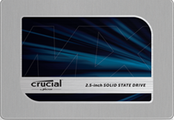
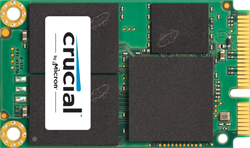
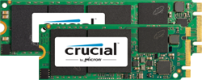

发布 Crucial® MX100 时，它为固态硬盘树立了一个新标准，Crucial MX200 是它的升级版。Crucial MX200 全面采用领先规范及最新动态写入加速技术，具有创新功能并能瞬时提高系统性能。

Crucial MX200 如何为您带来益处
性能和持续时间
启动几乎瞬时完成。载入程序只需几秒钟。轻松加速苛刻应用。
完成更多任务、更快速、使用寿命更长。Crucial MX200 对可压缩和不可压缩的数据均能实现 555 MB/s 的顺序读取速度，与普通硬盘相比超出 400 MB/s。1 更可喜的是，性能优势不只局限于此，因为 Crucial MX200 的持续时间等级是普通客户端 SSD 的 5 倍多。2 |
传输和保存大文件只需几秒钟。竞争固态硬盘通常依赖于多阶存储单元闪存的固定缓存，它能够让您在已公布的规格上写入顺序数据，但是仅此而已。我们的行业领先“动态写入加速”技术采用适应性较强的高速池（单阶存储单元闪存）解决了此问题，可获得始终如一的快速性能。 |
最大化性能并提高可靠性我们的工程师开发了 RAIN 技术以在组件级别上保护数据，这类似于在多个硬盘使用 RAID 的方式。此技术所实现的数据安全性和保护是很少消费类固态硬盘可媲美的。 |
最大程度地加密和保护您的数据。借助 AES 256 位加密技术保护个人文件和重要信息免受黑客和失窃的威胁 — 这是银行和医院使用的加密级别。Crucial MX200 符合或超过所有行业加密标准，包括 Microsoft® eDrive、IEEE-1667 以及 TCG Opal 2.0。 |
效率与可靠性
存储高达 1TB 的数据并具有比硬盘或竞争固态硬盘更高级别的可靠性。
系统的运行时间比以前更长 — 但是使用的电量更少。通过 Extreme Energy Efficiency 技术，Crucial MX200 的能效比典型的硬盘提高了两倍多。3 |
最大限度发挥硬盘的作用并避免过热。“自适应热保护”技术使 Crucial MX200 能够根据您使用硬盘的方式动态调整存储组件的活动，从而使您的存储系统不会过热。 |
安全地保存您的回忆、照片和文件。通常，照片或文件一旦损坏就无法再使用。使用 Crucial MX200 固态硬盘能够预先防止发生此类事件，因为它为所有存储组件配备了四层“专用数据防护”技术。 |
Crucial MX200 SSD 技术规格
产品宣传册 2.5" (7mm) SSD |
 mSATA SSD |
 M.2 类型 2260 SSD / M.2 类型 2280 SSD |
|||||
|---|---|---|---|---|---|---|---|
| 容量4 | 250GB | 500GB | 1TB | 250GB | 500GB | 250GB | 500GB |
| 部件号 | CT250MX200SSD1 | CT500MX200SSD1 | CT1000MX200SSD1 | CT250MX200SSD3 | CT500MX200SSD3 | CT250MX200SSD4 / CT250MX200SSD6 | CT500MX200SSD4 / CT500MX200SSD6 |
| 箱内物品 | 2.5" (7mm) SSD、7mm 至 9.5mm 垫片、Acronis® True Image™ HD 证书 | mSATA SSD、安装螺丝、Acronis® True Image™ HD 证书 | M.2 Type 2280 SSD / M.2 类型 2260 SSD、安装螺丝、Acronis® True Image™ HD 证书 | ||||
| 顺序读取 MB/s5 | 555 | 555 | 555 | 555 | 555 | 555 | 555 |
| 顺序写入 MB/s5 | 500 | 500 | 500 | 500 | 500 | 500 | 500 |
| 随机读取 IOPS5 | 100k | 100k | 100k | 100k | 100k | 100k | 100k |
| 随机写入 IOPS5 | 87k | 87k | 87k | 87k | 87k | 87k | 87k |
| 动态写入加速 | 不要求 | 不要求 | |||||
Micron® 品质 – 更高的可靠性。
Crucial MX200 是世界上最大的闪存制造商之一，Micron 的一个品牌，这款产品是在最先进的内存和存储技术的质量和创新基础上制造出来的。Crucial MX200 已经过超过一千小时的发布前验证测试和数百次固态硬盘质量鉴定测试，经证实质量非常可靠。现在就转用 Crucial MX200 固态硬盘吧，并开始深入挖掘存储能力。
注意：1GB = 10 亿字节。实际可用容量可能有所不同。
- 性能比较基于已公布的 500GB Crucial MX200 SSD 和 1TB Western Digital® Caviar Blue™ WD10EZEX 内置硬盘的顺序读取规格，它是目前最畅销的硬盘之一并且是一般内置硬盘的典范（自 2014 年 9 月起）。
- 1TB Crucial MX200 SSD 的已公布持续时间等级是三个领先主流客户端 SSD 的已公布平均持续时间等级的 5 倍多（2014 年 9 月）：1TB Samsung® 840 EVO、480GB SanDisk Extreme Pro® II 以及 480GB Intel® 530 SSD。
- 硬盘平均用电量比较基于已公布的 1TB Crucial MX200 SSD 和 1TB Western Digital® Caviar Blue™ WD10EZEX 内置硬盘规格，它是目前最畅销的硬盘之一并且是一般内置硬盘的典范（自 2014 年 9 月起）。
- 一些存储容量用于格式化及其他目的，不可用于数据存储。1GB 等于 10 亿字节。实际可用容量可能有所不同。
- 典型的 I/O 性能值使用 IOMeter® 测量，在队列深度为 32 且启用写入缓存的情况下测得。假设为刚开箱 (FOB) 状态。为了测量性能，可以使用安全擦除命令将固态硬盘恢复到 FOB 状态。系统变化会影响测量结果。